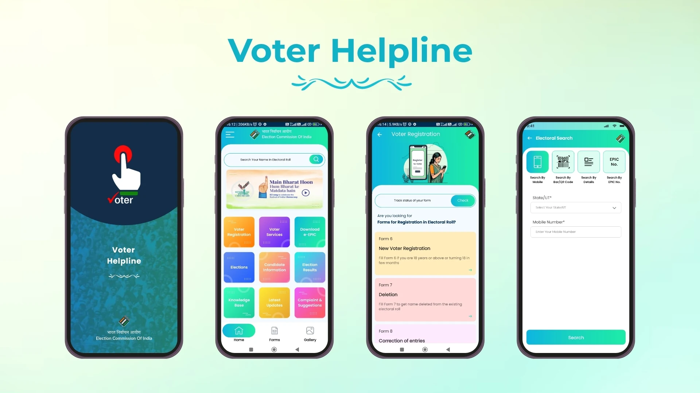

The Help and Support section of an online voting system is designed to assist voters and administrators in resolving any issues or queries they may face during the election process. It provides clear guidance on how to register, log in, cast a vote, and view results, along with troubleshooting steps for common problems such as forgotten passwords, login errors, or system navigation difficulties. Support may be offered through multiple channels, including FAQs, user manuals, live chat, email support, or a dedicated helpline.
This section ensures that voters have access to timely and accurate assistance, helping them complete the voting process smoothly and without confusion. By offering reliable help and support, the system builds user confidence, promotes participation, and ensures that technical or procedural issues do not hinder the fairness and efficiency of the election.
Go to the Register page, fill in your name, mobile number, password, address, upload your photo, select your role (Voter or Group), and click "Register".
After registration, visit the Login page, enter your registered email and password, and click "Login" to access your dashboard.
In your dashboard, scroll to the list of groups or candidates. Click the Vote button next to your preferred choice. You can vote only once.
Yes. Our system uses encryption to ensure your vote remains private. No one can see your voting choice.
Contact our support team: Email: mandeepchaurasia8@gmail.com | Phone: +91-9569478802